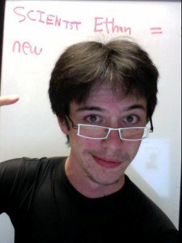

 Ethan Eldridge graduated in May, 2013 with a BS in computer science and a pure math minor. During his time at UVM, he alternated between having a minor in physics, a double major in applied math with a pure math minor, or just a pure math minor; however, he never doubted that he wanted his first major in computer science.
Ethan became involved in CS Crew during his sophomore year after being coaxed into it by a friend. During his junior year, he became more active in CS Crew and that spring he became one of the CS Crew leaders, becoming good friends with Penni ordering pizza every week. At the end of his junior year he was inducted into UPE and made president of that, as well.
As an undergraduate, Ethan received permission to take two CS graduate courses (evolutionary computation and data mining). The team project he worked on in evolutionary computation was later turned into a real conference paper on which he was a co-author, and was presented at, and published in the proceedings of, the prestigious Genetic and Evolutionary Computation Conference in summer 2012.
During his senior year, he took on 2 internships; one as a web developer for Brandthropology, and another as a web developer/maintainer and IT assistant at the Vermont Housing and Finance Agency. In addition, he continued working as marketing and promotions staff at the University, as well as leading UPE and CS Crew - it was a full year! He and fellow CS Crew members formed a team for the 2012 Hack VT competition, which won the best student project prize. He was also awarded the ACM faculty award by for his tremendous contributions to the department.
After graduating, he moved from New Hampshire to Vermont, living in Burlington and working in Montpelier at Bear Code, where his 2-month internship obtained through Vermont HITEC subsequently turned into a full time Developer position. He is also working on helping organize the National Civic day of hacking in Vermont with his coworker from Brandthropology Micah Mutrix. He is also collaborating on a cool open source project for Green Up Vermont that he and another UVM student spearheaded. This started off as part of the Hack4Change presence in Burlington and his team continued their work after the hackathon was over. After working for a year or so, he may pursue his master's degree in Computer Science, possibly focusing on Artificial Intelligence, Machine Learning, Natural Language Processing, or Data Mining.